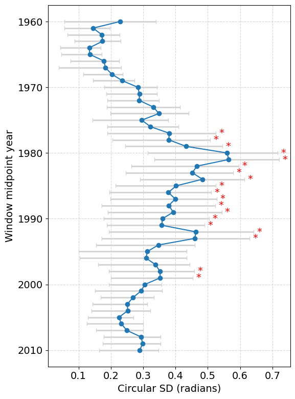
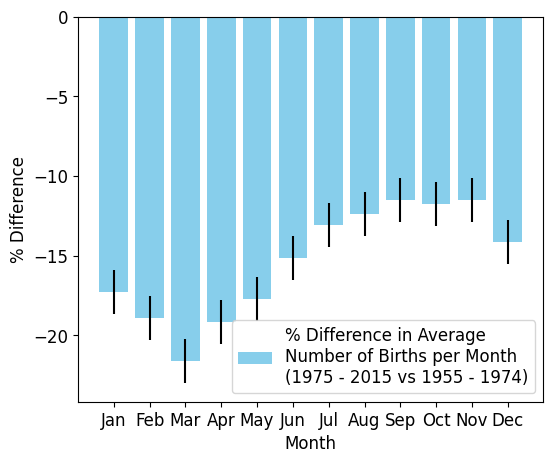
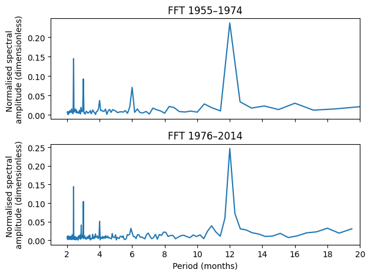
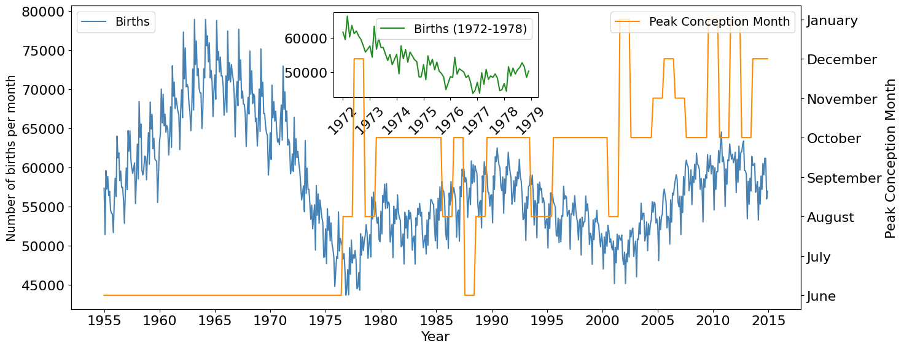
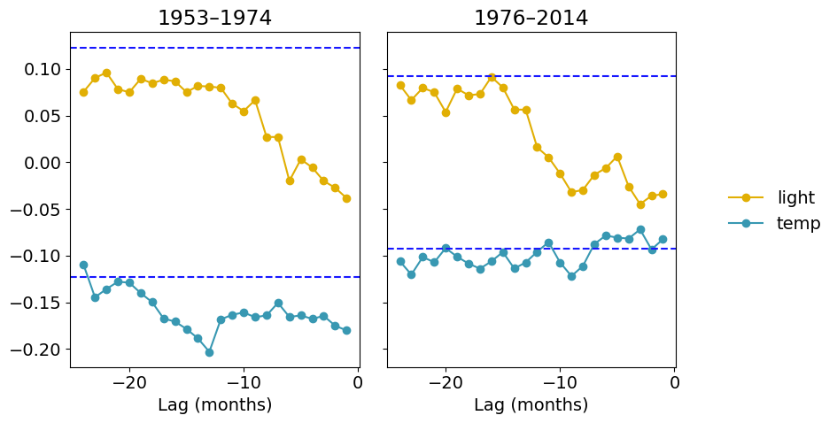
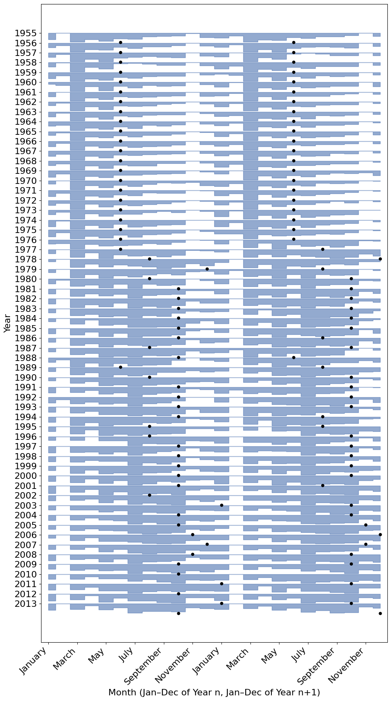
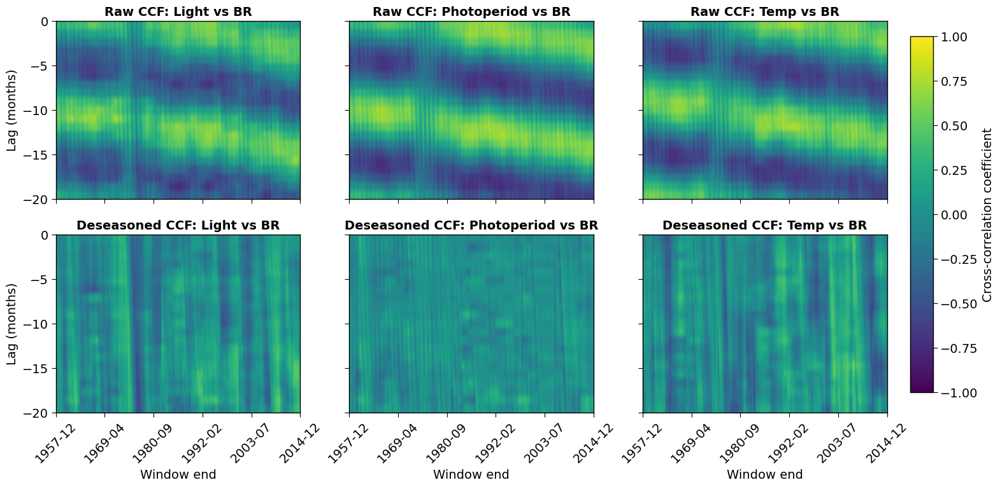
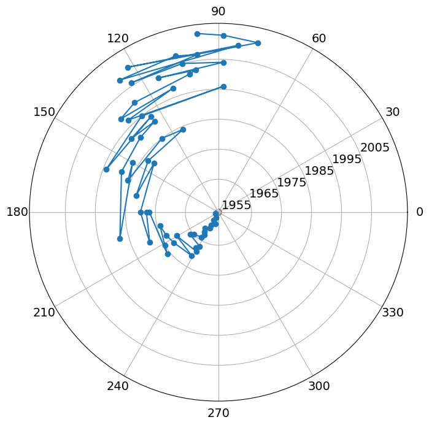

The Digitiser workbench
Read the values out of graphs in papers – lines, points with their error bars, bars, actograms and other stacked rows, heat maps and polar plots – with trace-digitiser, our Python package. Point and click in the Digitise tab, write Python in the Notebook tab, or type commands in the Terminal tab: all three run the same package. Everything runs here, in your browser. No picture is uploaded anywhere and no AI model looks at it, so you can digitise a figure of an old paper without sending it to anyone.
Everything stays on this computer
Python (Pyodide) and Tesseract, which reads the axes' labels, run inside this web page. Your pictures and results are kept in this browser, on this computer. The only things the page fetches from elsewhere are Python itself and its packages, from a public server (jsDelivr) – never anything of yours. The AI assistant is the one exception, and only if you set it up with a key of your own: even then it is never sent a picture. Nothing leaves your browser has the details.
How the help works
The walkthroughs use the figures of one of our own papers, Hearn and Whitmore (2026), whose data we have, so you can see exactly how close a digitisation comes. Buttons like this one do things in the workbench for you:
Code in a box has buttons to run it in the Terminal or add it to a notebook. Hide this pane with the button at its top right (or Ctrl+\) when you need the room.
- Points and error bars: Figure 3cDots with horizontal confidence intervals, an axis that runs downwards – and a scanned copy
- Bars, and a scan: Figure 1bBars that hang below zero, with error bars – and the same figure scanned
- Two panels, one x axis: Figure 3aLines in two stacked panels, of which only the lower has x labels; marking ticks
- Two y axes and an inset: Figure 1aThree lines – one against a second y axis labelled with months, one in an inset – and two legends
- Panels side by side: Supplementary Figure 3Two panels, two series of points in each, a legend outside, dashed lines
- A birthogram: Figure 2A stack of 59 rows of months, double-plotted, with dots – read like an actogram
- Six heat maps: Figure 4Six heat maps sharing one colour bar
- A polar plot, put right by hand: Figure 3bRings and their values, and points taken out and put in with the mouse
- A figure in a PDFChoose the page, draw it as a picture, straighten, crop, digitise
- Opening pictures and PDFsExamples, your files, your computer, the clipboard, PDF pages; straightening and cropping
- Marking the picturePlot areas, regions to leave out, ticks and their values, colours, a colour bar, centre and rings, points by hand
- What comes outThe overlay, the Check list, the table, the files, and the command and Python that do the same
- Checking a digitisationHow to tell whether it is right, and what to do when it isn't
A first figure
Five minutes with Figure 3c of the examples: a dot for each ten-year window, with a grey confidence interval on each. You will open it, let trace-digitiser look at it, digitise it, check the result against the values the figure was drawn from, and see the command and the Python that do the same.

1 · Open it
The picture appears in the Digitise tab. The first time, Python takes a little while to start (it downloads about 30 MB, which your browser then keeps); the dot at the bottom right of the tab turns green when it is ready.
2 · Look at what trace-digitiser sees
As soon as Python is ready it looks at the figure. On the right, under What trace-digitiser sees, it lists the plot area it found, what it read from each axis's labels, and the colours drawn. Over the picture, a dashed blue box marks the plot area and small green labels show what it read beside each tick: 1960 … 2010 down the y axis and 0.1 … 0.7 along the x axis. Green means the scale rests on that label. Use the mouse wheel to zoom, and drag to move the picture.
3 · Digitise
The kind of figure is Points (chosen for you, as this is one of the examples). Press Digitise as points. In a second or two, every dot found is circled in pink over the picture, with its confidence interval in blue, and the side panel shows a table of the values.
Read the Check list. Here it says that the y axis was read as running downwards – which is right: the years go down the page in this figure. It says so because negative numbers whose minus signs were missed look the same.
4 · How close is it?
For the examples, Compare with the known values appears under the result (it runs by itself after each run). For Figure 3c it finds all 51 windows, with a typical error of 0.0004 radians in the circular SD – 0.05% of the axis, a small part of a pixel – and the same for the ends of the confidence intervals.
5 · The same in the terminal and in Python
Under the comparison are the command and the Python that do what you just did. That is how you would digitise many figures at once, or on your own computer:
trace-digitiser points /data/examples/hearn-whitmore-2026/figure-3c.png -o ~/results/figure-3c --overlay
compare-known ~/results/figure-3c/figure-3c_points.csv
The files are in ~/results/figure-3c: the table (figure-3c_points.csv), a record of how it was made (…_provenance.json) and a picture of what was found (…_overlay.png). What comes out explains them.
Next
- The examples: a walkthrough for each kind of figure, from the easy to the awkward – two y axes, an inset, a scan, a heat map, a polar plot.
- The Digitise tab: every tool, and what each part of the tab is.
- The Notebook tab: trace-digitiser in Python, and what to do with the values.
Nothing leaves your browser
The workbench was made so that a figure can be digitised without sending it anywhere: not to a server, not to an AI model. Everything that reads the picture runs inside this web page, on your computer.
What runs where
| What | Where it runs |
|---|
| Python, with trace-digitiser, NumPy, OpenCV, pandas, Matplotlib | In this page (Pyodide: Python compiled to WebAssembly), in a background thread of the browser. |
| Tesseract, which reads the axes' tick labels | In this page, compiled to WebAssembly, beside Python. |
| PDF pages drawn as pictures | In this page (PDF.js). |
| Your files – pictures, results, notebooks | Kept in this browser's own storage, on this computer (Your files). |
The page does fetch some things – never anything of yours, and nothing that knows what you open: the web page itself and its parts from GitHub Pages, and Python and its packages from jsDelivr, a public server for such packages. After the first visit the browser keeps them.
The AI assistant
The AI tab does nothing until you give it a key of your own for an AI service. Then what you type, and what you tick below the message box, goes to that service – and only that. It is never sent a picture, nor the values read from one, nor what is in your files: for the Digitise tab it is told the picture's name and size, your marks and settings, what trace-digitiser read from the axes, and the last run's messages. The AI assistant lists exactly what each tick sends.
Copyright
Facts – the values a graph shows – are not protected by copyright in most countries, and digitising a published figure to analyse its values is common in research (meta-analyses depend on it). The picture itself is the publisher's or the authors': keeping a copy for your own work is one thing, publishing it again another. When you use values you have digitised, say which figure of which paper they come from, and that they were digitised (trace-digitiser's provenance file records how). We are not lawyers: if in doubt, ask your library.
The examples, and what they teach
The examples are the figures of one of our own papers, so there is no question of anyone else's copyright, and – because the paper's code and data are public – every value they show is known. Each walkthrough digitises one of them and checks the result against those values. Together they cover every kind of figure trace-digitiser reads, and most of the awkward things papers do.
Hearn TJ, Whitmore D (2026). An abrupt mid-1970s shift in UK birth seasonality and its implications for chronobiological studies. Journal of Biological Rhythms 41(1): 28–41. doi:10.1177/07487304251384348
The figures are in /data/examples/hearn-whitmore-2026 (read-only), each with FIGURE.known.csv beside it: the values it was drawn from, worked out by running the paper's own notebooks on its data (the paper's repository). Drawn again from those values, each figure comes out the same, pixel for pixel. The folder's README.md says what each column is.
How close is the typical (median) error, as a percentage of the axis's span. The rest of this group:
- Points and error bars: Figure 3cDots with horizontal confidence intervals, an axis that runs downwards – and a scanned copy
- Bars, and a scan: Figure 1bBars that hang below zero, with error bars – and the same figure scanned
- Two panels, one x axis: Figure 3aLines in two stacked panels, of which only the lower has x labels; marking ticks
- Two y axes and an inset: Figure 1aThree lines – one against a second y axis labelled with months, one in an inset – and two legends
- Panels side by side: Supplementary Figure 3Two panels, two series of points in each, a legend outside, dashed lines
- A birthogram: Figure 2A stack of 59 rows of months, double-plotted, with dots – read like an actogram
- Six heat maps: Figure 4Six heat maps sharing one colour bar
- A polar plot, put right by hand: Figure 3bRings and their values, and points taken out and put in with the mouse
- A figure in a PDFChoose the page, draw it as a picture, straighten, crop, digitise
Points and error bars: Figure 3c
A forest plot: a blue dot for each ten-year window of births, at the circular standard deviation of its peak phase, with grey 95% confidence intervals. The years run down the y axis. Red asterisks mark windows that differ from 1955–1974, and dashed grey lines mark the ticks.
Digitise it
- Open it. Once Python has looked at it, the side panel says the y axis's 6 labels agree (1960 … 2010) and the x axis's 7 (0.1 … 0.7), both with high confidence.
- The kind is Points. Error bars is find them (auto): it keeps those found on most of a series' points.
- Press Digitise as points.
All 51 windows are found; the comparison gives a typical error of 0.0004 rad (0.05% of the axis) for the dots and about the same for the ends of the intervals. The red asterisks are not read as points, because they are another colour that holds no markers; the grey dashed lines don't hide the intervals, which are found to the middle of their caps.
In the table, x_value is the circular SD and y_value the window's year; x_error_low and x_error_high are the ends of the interval, and x_error_capped says whether a cap was found there.
"The y axis was read as running downwards"
Most y axes go up. This one goes down, on purpose – and so does an axis of negative numbers whose minus signs were not read. trace-digitiser can't tell the two apart, so it says what it did. Here it is right; if it weren't, you would mark two ticks and their values (the Tick tool).
The scanned copy
figure-3c-scanned.jpg is the same figure as if printed and scanned: turned by 0.8°, softened, saved as a JPEG.
The side panel says it is tilted 0.80° clockwise, and offers to Straighten it. Do: an upright copy is saved as ~/pictures/figure-3c-scanned-straightened.png and opened. Digitise it as points: all 51 windows again, with a typical error of 0.0005 rad (0.07%). Without straightening, none of the windows is found: a tilt of under a degree is enough to throw the axes out.
trace-digitiser points /data/examples/hearn-whitmore-2026/figure-3c-scanned.jpg -o ~/results/figure-3c-scanned
compare-known ~/results/figure-3c-scanned/figure-3c-scanned_points.csv
On the command line (and in Python), a tilted figure is straightened by itself when nothing gives pixel positions; the straightened picture is saved beside the results, and its pixels are the ones in the table.
Bars, and a scan: Figure 1b
Twelve bars, one for each month: how many fewer births there were from 1975 on than in 1955–1974, in per cent. They hang down from zero, and each has an error bar of one bootstrap standard error.

Digitise it
The kind is Bars. Digitise: the 12 bars are found, each from its baseline – the zero line, read from the y axis – to its end, with a typical error of 0.05 percentage points (0.2% of the axis). Each error bar reaches 1.35 either side: the notebook drew one bootstrap standard error from 1000 unseeded samples, so this figure is the only record of its value.
Two things in the Check list: the x axis is not calibrated – its labels are month names, not numbers, so each bar has its x_pixel and its place (bar) but no x_value – and a patch of the bar colour that doesn't reach the baseline was left out: the legend's.
The scanned copy
It is tilted 1.2°. Straighten it, then digitise as bars: the same 12 bars, typical error 0.05 points (0.18%), error bars 1.35. Not straightened, only 9 bars are found, with errors of 15 points or more – one more reason to straighten every scan.
trace-digitiser bars /data/examples/hearn-whitmore-2026/figure-1b-scanned.jpg -o ~/results/figure-1b-scanned --overlay
compare-known ~/results/figure-1b-scanned/figure-1b-scanned_bars.csv
Two panels, one x axis: Figure 3a
Two spectra, one above the other: the upper for 1955–1974, the lower for 1976–2014. Only the lower panel has numbers on its x axis; the upper one shares it.

Digitise it
Both panels are found, and both lines read: the comparison gives a typical error of 0.0008 (0.3% of the axis) for each. The Check list says what was done about the upper panel's x axis: it has no labels that could be read, so it was given the x scale of the lower panel, which has the same left and right edges. The worst errors, about 0.07, are at the sharpest peaks, which are thinner than the line drawn through them.
A line's table has a row for each column of pixels: x_value and center_estimate (the middle of the line there), with upper_envelope and lower_envelope (its edges) and interpolated (no line in that column, so the value is between its neighbours').
Setting the x axis yourself
When the labels can't be read, you tell trace-digitiser what two ticks stand for. Choose the Tick tool and click just below the lower panel's x axis, on the tick of 2: the click snaps to the tick mark (the loupe at the top right shows exactly where), and a box asks for its value. Type 2. Do the same for 20. Digitise again: both panels take their x scale from your ticks – those under a panel serve the panels stacked above it too.
The command line can't say which panel a tick belongs to, so with two panels the result gives the Python instead:
import trace_digitiser as td
result = td.digitise("/data/examples/hearn-whitmore-2026/figure-3a.png",
x_ref={1: [(114, 2), (611, 20)], 2: [(114, 2), (611, 20)]}, write_outputs=False)
result.trace_data.groupby("panel_id").x_value.agg(["min", "max"])
Two y axes and an inset: Figure 1a
The births in each month from 1955 to 2014 (blue, against the left-hand axis), the month in which births were conceived at their peak (orange, against the right-hand axis, which is labelled with month names), and an inset of 1972–1978 with its own axes (green). Two legends sit inside the plot. Each line needs a run of its own, with the right marks.

Once it has looked, the side panel lists one plot area: its y axis (45000 … 80000) and x axis (1955 … 2015) read with high confidence, and its colours – orange, blue and black. The right-hand axis's 8 labels were found but not read as numbers: they are words.
1 · The blue line: one colour, and two things to leave out
- With the Colour tool, click on the blue line (or click the blue chip under Colours). Only that colour is read now.
- With Leave out, drag a box around the Births legend at the top left – its blue sample would be read as part of the line – and another around the whole inset, with its labels.
- Digitise as lines.
Typical error: about 500 births (1.4% of the axis). That is more than for the other figures, and not a fault of the reading: 720 months are drawn across about 1190 columns of pixels, so the line zigzags within a column, and its middle is not any one month's value. Under the inset (left out), the line is hidden and interpolated: the worst errors are there.
2 · The orange line: a second y axis, labelled with words
Its labels are months, so they can't give a scale; you give it with two ticks. Months are numbers here: June is 6 and January (of the next year) 13.
- Take out the marks of step 1 (Take them all out). Pick the orange line's colour, and leave out the Peak Conception Month legend at the top right.
- With Tick, click on the right-hand axis at the height of June, the lowest label: it snaps to the label's row. Type 6. Then click at January, the highest, and type 13.
- Digitise as lines. Ticks on the right-hand axis set the y scale for this run.
Typical error: 0.05 months (0.7%). A right-hand axis with numbers on it needs no ticks: choose Axes → Read the values against a second y axis on the right (--y-axis right, y_axis="right").
3 · The green line: an inset is a plot of its own
- Take out the marks again, and pick the green line's colour.
- With Plot area, drag a box over the inset's own axes – from its y-axis line to its right edge, and from its top to its x-axis line. Leave out the inset's legend.
- Press Look again: with your plot area, trace-digitiser finds the inset's tick marks (its labels are too small, or slanted, to read).
- With Tick, click under the inset's x axis on the first tick (1972) and the last (1979), and beside its y axis on 60000 and 50000.
- Digitise as lines.
Typical error: about 220 births (0.9%). The three runs are three commands – the result shows each:
EX=/data/examples/hearn-whitmore-2026
trace-digitiser $EX/figure-1a.png --trace-colour '#4682b4' --exclude 120,15,262,58 --exclude 455,12,882,218 -o ~/results/1a-blue
trace-digitiser $EX/figure-1a.png --trace-colour '#ff8c00' --exclude 990,15,1296,58 --y-ref 485.5:6 --y-ref 34.5:13 -o ~/results/1a-orange
trace-digitiser $EX/figure-1a.png --trace-colour '#228b22' --plot-area 543,20,876,159 --exclude 606,26,868,68 --x-ref 558:1972 --x-ref 865:1979 --y-ref 62:60000 --y-ref 118:50000 -o ~/results/1a-green
compare-known --example figure-1a ~/results/1a-orange/figure-1a_automated_digitised_trace_by_column.csv
A colour in a command is put in quotes: an unquoted # starts a comment in the shell.
Panels side by side: Supplementary Figure 3
Two panels (1953–1974 and 1976–2014), each with two lines of dots – light (yellow) and temperature (blue-green): the correlation of each with the birth rate at lags of −24 to +24 months. Dashed blue lines mark the significance thresholds, and the legend is outside the panels.

Both panels are found and both series read: 96 of 96 points, typical error 0.0003 (0.07% of the axis). Each point's series and colour say which line it belongs to; panel_id which panel. The right-hand panel has no y labels of its own: it is given the left one's scale, as they share their top and bottom.
Two places in each panel have two markers drawn over each other. The Check list says so – they were separated by their size – and the overlay is where to look: zoom in on them.
To read one series only, pick its colour (the chips under Colours, or the Colour tool) before you digitise. The dashed lines are not points: they hold no markers.
import trace_digitiser as td
pts = td.digitise_points("/data/examples/hearn-whitmore-2026/figure-s3.png", write_outputs=False).data
pts.pivot_table(index="x_value", columns=["panel_id", "colour"], values="y_value").round(3).head()
A birthogram: Figure 2
A row for each year from 1955 (top) to 2013, double-plotted like an actogram: each row shows its own year's twelve months and then the next year's. In each month, a filled step hangs down from the row's line, as deep as that month's births were high (0 for the year's fewest, 1 for its most). A black dot marks the month in which births were conceived at their peak.

What trace-digitiser needs to know
- Where each row's line is. The y axis is labelled with every year, so Row values 1955:2013 says that the rows' lines are at the y values 1955, 1956 … 2013 – placed by the axis's scale. (Other ways: Row positions in pixels, or ticks.)
- Bins. Two years of twelve months: 24. Each row's height is then the middle of its fill in each bin; without bins, every column of pixels gets a value.
- Row spacing value. The paper drew each row 1.1 units apart, with its fill at most 1 – so 1.1 gives heights in the figure's own units (0 to 1).
- Dots: black, to find the dots and say which bin each is in.
Reading 59 tick labels takes a few seconds. Then: 59 rows × 24 months, typical error 0.017 – 1.7% of a row (a row's fill is only some 25 pixels deep, so a pixel is 4% of it), and the dots in all 1416 months agree with the data. The fill direction (it hangs down) is found by itself.
The third starter notebook uses this table: the month with most births, year by year, moves in the mid-1970s – which is what the paper is about.
trace-digitiser rows /data/examples/hearn-whitmore-2026/figure-2.png --row-values 1955:2013 --bins 24 --dots black --row-spacing-value 1.1 -o ~/results/figure-2
compare-known ~/results/figure-2/figure-2_rows.csv
Six heat maps: Figure 4
Six heat maps in two rows: the correlation of light, photoperiod and temperature with the birth rate, at lags of −20 to 0 months (down) and for each 60-month window (across), raw above and deseasoned below. One colour bar, from −1 (dark purple) to 1 (yellow), serves them all.

It finds six plot areas – one of them by its frame alone, because the dark colours beside it hide its axis lines – and the colour bar. A heat map's value is read from its colour: each colour is looked up on the colour bar, whose scale is read from its labels like an axis's.
Each map has 21 rows (lags −20 … 0). Its 685 columns are narrower than a pixel, so they can't be told apart: each column of pixels is read as it is. So give Rows 21 and leave Columns empty.
Typical errors from 0.009 to 0.017 (0.5–0.9% of the colour bar), over 48,000 cells. Move the mouse over a map: the status bar gives the value of the cell under it. The Check list says the colour bar's scale was read with medium confidence – check its values (1, 0.75 … −1) against the figure; if they were wrong, you would give its ends as Colour bar ends -1,1.
The x axes are labelled with dates (1957-12), which are not numbers. For values in years, mark two of their ticks with decimal years: December 1957 is 1957.96, December 2014 is 2014.96.
trace-digitiser heatmap /data/examples/hearn-whitmore-2026/figure-4.png --rows 21 -o ~/results/figure-4
compare-known ~/results/figure-4/figure-4_heatmap.csv
A polar plot, put right by hand: Figure 3b
A dot for each year from 1955 to 2014: its angle is the phase of that year's peak of births, and it lies further out each year – the rings are labelled 1955 (innermost) to 2005. The dots are joined by a line, and where the phase moved little they crowd together.

1 · The radial scale
The kind is Polar. trace-digitiser finds the centre and the rings itself (drawn in blue). Their labels are years, so tell it two: choose the Ring tool, click on the innermost ring (it snaps to it) and type 1955, then on the outermost labelled ring, 2005. A dot's distance from the centre is then its year. Pick the blue of the dots with Colour.
2 · Digitise
50 of the 60 years are found, with a typical error of 0.13° in their angle; and 15 other points, where dots crowd onto each other and onto the line. Angles are measured as matplotlib draws them: 0 to the right, anticlockwise (change it under the kind's options for a plot drawn like a clock).
3 · Put it right by hand
This is what the Edit points tool is for. Zoom in where the dots crowd (the mouse wheel), then:
- click a pink circle that is not on a dot of its own – on the line between two, or a second circle on one dot – to take it out (it is crossed in red; click again to put it back);
- click on a dot that has no pink circle to put a point there (a blue cross).
The status bar gives the angle and year under the mouse. Then Save the edited table: it is written beside the first as figure-3b_polar_edited.csv, with the values of the points you added worked out from the same scale, and an edited column that says which they were. The comparison runs again on it: with every dot found once and nothing else, all 60 years are there.
compare-known ~/results/figure-3b/figure-3b_polar_edited.csv
A figure in a PDF
The figure you want is usually in a PDF of the paper – for an old paper, often a scan, page by page. practice-pages.pdf is two pages laid out as such a scan, with Figures 1b and 3c on them; the second page was put on the scanner askew.
- Open the PDF. The Digitise tab shows its pages: choose page 2. It is drawn as a picture at the resolution you choose (300 dots per inch suits most papers) and saved as
~/pictures/practice-pages-page2.png, which then opens.
- It is tilted 0.7°: Straighten it.
- trace-digitiser finds the figure's plot area on the page by itself. If it doesn't – a page with several figures, say – mark it with Plot area, or use Crop to keep only the figure.
- Digitise as points.
The picture's name doesn't say which example it is, so compare it in the Terminal, saying which:
compare-known --example figure-3c ~/results/practice-pages-page2-straightened/practice-pages-page2-straightened_points.csv
Put it among your files (My files → Add files from my computer, or drop it on the Digitise tab), then open it there. PDF.js draws the page in your browser: the PDF goes nowhere. A figure that is a picture inside the PDF (a scan) is drawn at the resolution you choose; one drawn as lines and text (most papers since about 2000) is sharp at any resolution, so choose a high one for a small figure.
The Digitise tab
The picture of a graph in the middle, tools to mark it along the top, and on the right what trace-digitiser sees, the kind of figure and its options, your marks, and the result. Whatever you do here is a run of trace-digitiser with options – the same options you could type in the Terminal or in Python, and the result shows those too.
The way through
- Open a picture or a PDF (Opening pictures and PDFs).
- trace-digitiser looks at it: the plot areas (dashed blue), what it read beside each axis (green where the scale rests on a label, grey where not), the colours drawn. A tilted scan is offered a Straighten.
- Choose what kind of figure it is: lines, points, bars, rows, heat map or polar (Kinds of figure).
- Digitise. Often that is all: look at what was found, drawn in pink over the picture.
- If something is wrong, mark what it needs – a plot area, regions to leave out, two ticks on an axis, a colour – and digitise again (Marking the picture).
- Read the Check list, look at the table, and keep the files (What comes out, Checking a digitisation).
Moving around the picture
- The mouse wheel (or a pinch on a touchpad) zooms where the mouse is, whatever the tool; +, − and 0 (fit) do too, when the picture has the keyboard.
- Move drags the picture. With another tool, hold Space (or use the middle button) to drag.
- The loupe at the top right shows the pixels under the mouse, eight times bigger, while a marking tool is chosen – with the line a tick would be placed on.
- The status bar gives the pixel under the mouse, the value there (from your ticks, the last result or what was read from the axes), and its colour; over a heat map, the value of the cell.
- Show hides or shows what trace-digitiser sees, your marks, and the result.
The tab keeps your marks for each picture (in this browser), and opens the last picture again when you come back.
- Opening pictures and PDFsExamples, your files, your computer, the clipboard, PDF pages; straightening and cropping
- Marking the picturePlot areas, regions to leave out, ticks and their values, colours, a colour bar, centre and rings, points by hand
- What comes outThe overlay, the Check list, the table, the files, and the command and Python that do the same
- Checking a digitisationHow to tell whether it is right, and what to do when it isn't
Opening pictures and PDFs
Open shows the examples and the pictures and PDFs among your files. A picture can be PNG, JPEG, GIF, WebP, BMP or TIFF.
- From your computer: Open → From my computer…, or drop the file on the picture area. It is copied into
~/pictures – kept in this browser, not sent anywhere.
- A screenshot: copy it (on Windows Win+Shift+S, on a Mac Ctrl+Cmd+Shift+4), click on the picture area and press Ctrl+V. It is saved as
~/pictures/pasted-….png. A screenshot of a figure on screen is only as sharp as the screen: zoom the PDF in before you take it.
- A PDF: choose the page and how sharply to draw it (dots per inch); the page is saved as a picture in
~/pictures (A figure in a PDF).
- From the Files tab: a picture has a Digitise button; in the Terminal,
digitise FILE.
Straighten
A scan is seldom straight, and a tilt of half a degree is enough to spoil the axes. When trace-digitiser finds a tilt of 0.15° or more, the side panel says so and offers Straighten it: an upright copy is saved beside the picture (or in ~/pictures) as NAME-straightened.png, and opened. Mark the upright copy, not the tilted one.
Crop
The Crop tool keeps the part of the picture inside the box you drag, as a new picture (NAME-cropped.png). Cropping is seldom needed – a plot area or regions to leave out do the same – but a page of a paper with several figures is easier to work with cropped to one of them.
Marking the picture
Each tool sets one of trace-digitiser's options. The marks are listed under Your marks, where the × beside each takes it out.
Ticks, in more detail
- A tick goes with the plot area beside which you click. Panels stacked on one x axis share the ticks marked under the lowest; panels side by side share the y ticks marked beside the first.
- With several panels, the command line can't say which panel a tick belongs to: the result then gives the Python, which can (
x_ref={1: […], 2: […]}).
- A log axis: choose log under Axes, and type the values themselves (10, 1000), not their logarithms.
- Ticks on the right-hand axis set the y scale from that axis – for a line drawn against it (Figure 1a).
- No ticks at all, and values known at the edges of the plot area? Give them under Axes (
y_min, y_max …). Only if the axis ends exactly at those values.
What comes out
Over the picture
What was found is drawn in pink: lines, the circles of points (their error bars in blue), the outlines of bars, the edges of rows' fills, the centres of a heat map's cells (zoom in to see them). The plot areas it used are in green, with the values of the ticks each axis's scale rests on.
The Check list
Everything trace-digitiser was unsure of: an axis read with less than high confidence (with the labels it rests on, to check), an axis that couldn't be read, a tilt, a line that was missing from many columns, a legend left out, markers that overlapped. Read it every time. What do these mean? asks the AI assistant, if you have set it up.
The files
In ~/results/NAME (change it under Save into):
Click a file to open it in the Files tab; Download the table saves the CSV to your computer.
The same, by hand
Under the result are the trace-digitiser command and the Python that do exactly what you did with the mouse. Run in the terminal and Add to notebook try them here; on your own computer, with pip install trace-digitiser, they give the same result. That is the way to digitise many figures alike, and to say in a paper how the values were got.
Checking a digitisation, and putting it right
A digitisation is right when what is drawn in pink lies on what the figure shows, and the scales rest on the right ticks. For the examples, Compare with the known values says how close it is; for your own figures, the overlay is the check.
- The scales. Are the green tick values on the axes the figure's own? A label misread (a 6 for an 8) is usually outvoted by the others; if not, the Check list says the confidence is medium or low – mark two ticks yourself.
- The plot areas. Does each green box sit on the axis lines?
- What was found. Zoom in along the pink: does it follow the line, sit on each marker, reach the end of each bar?
- Spot checks. Put the mouse on a few points: the status bar's value should be what you read off the axes by eye.
Kinds of figure
trace-digitiser has a reader for each kind of figure. Choose by what the values are drawn as, not by what the figure is about.
A figure with lines and markers (a line through its points) can be read either way: as points, if what matters is the points; as lines, for the values between them. Box plots and pie charts have no reader yet: their few values are quickest read with the mouse – the status bar gives the value under it once two ticks are marked.
Lines
For each line in each plot area, a value for every column of pixels: where the middle of the line is in that column. Lines are told apart by their colour.
- Colours: without colours picked, every colour drawn in the plot that looks like a line is read, each as a line of its own; black or grey ones only when they look like lines rather than axes and text (Black or grey lines changes that).
- The values:
center_estimate (the middle), mean_estimate (the mean of the line's pixels), upper_envelope and lower_envelope (its top and bottom). For a line drawn thick, or a dense line that zigzags within a column, the envelope says how much is drawn there.
- Gaps: a column with nothing of the line (under a legend, or past its end) is filled in from its neighbours, and
interpolated is True there. The Check list says when much of a line is.
- Resampling: in Python,
result.resample(interval) gives one value per interval of the x axis (a month, an hour) rather than per pixel.
Walkthroughs: Figure 3a (two panels), Figure 1a (three lines, two y axes, an inset).
Points
Every marker – dot, square, triangle, diamond, filled or not – of the colours read, with its position in pixels and in the axes' units, and its error bars.
- Series: one per colour. Without colours picked, every colour that holds markers is a series.
- Overlapping markers are separated by their size, and the Check list says where; markers cut by a line or a gridline are put together again.
- Marker size: found from the markers themselves; give it (the diameter in pixels) when they are tiny or all overlap.
- Error bars: auto keeps those found on most of a series' points; or choose up-and-down, across, both or none. Each end is found at the middle of its cap;
x_error_capped / y_error_capped say whether there was one.
- Colour tolerance: how far (0–441 in RGB) a pixel's colour may be from the colour picked – raise it for a scan, lower it when two series' colours are close.
Walkthroughs: Figure 3c, Supplementary Figure 3.
Bars
Each bar from its baseline to its end – up or down, or across for bars that lie down – with its error bar. The baseline is the axis's 0 when it lies within the plot, or the value you give.
- The bars are told apart by colour, as series; a legend's patch is left out because it doesn't reach the baseline.
- The table:
value (where the bar ends), baseline, x_pixel or y_pixel (its middle), its edges in pixels, and error_low, error_high.
- Labels: bars labelled with words (months, groups) have no x values; their order is in
bar.
Walkthrough: Figure 1b.
Rows: actograms and the like
A figure drawn as a stack of rows, each a little plot of its own: actograms (a day per row, activity as black bars), double-plotted records, birthograms. For each row, how high its fill reaches at each column – or in each of a number of bins – as a fraction of the distance between rows.
- Where the rows are: their values on the y axis (Row values, 1955:2013 or a list), their positions in pixels, or as many evenly spaced rows as you say between two positions; otherwise one row for each tick label read.
- Bins: 24 for a day of hours or two years of months, 48 for two days of hours (double-plotted)…
- Row spacing value: what the distance between two rows stands for, for heights in the figure's own units.
- Fill: up from its line (most actograms) or down (Figure 2) – found by itself. Its colour: the commonest, or the one you pick.
- Dots: markers of a colour you name are found and placed in their row and bin (
dot in the table).
Walkthrough: Figure 2.
Heat maps
Each cell's value, from its colour: the colour is found on the colour bar (in CIELAB, where distance matches what the eye sees), between the bar's two nearest colours. The bar's scale is read from its labels, like an axis's.
- The colour bar is found by itself; mark it (Colour bar) if not. Its ends can be given (Colour bar ends, -1,1) when its labels can't be read.
- No colour bar? Name matplotlib's colour map (viridis, magma, RdBu_r…) with its smallest and largest values.
- Cells: how many rows and columns are found from the picture; give them when you know them. Cells narrower than a pixel can't be told apart: then each column of pixels is a cell.
colour_error in the table says how far a cell's colour is from the bar; cells far from it (text, gridlines) have no value.
Walkthrough: Figure 4.
Polar plots
Each point's angle and its distance from the centre. The centre and the circles are found by themselves; the radial scale comes from rings you mark with their values, or from the value of the outer circle.
- Angles: from the right, anticlockwise (matplotlib's way), unless you say 0 is at the top (a clock face) or elsewhere, and that they grow clockwise.
angle_degrees and angle_radians in the table.
- Distances:
radius_px in pixels, r_value in the scale's units – a fraction of the outer circle if no scale is given.
- Points that crowd together are where to Edit points by hand.
Walkthrough: Figure 3b.
The Notebook tab
Jupyter-style notebooks in Python – the same Python as the Digitise tab, with trace-digitiser, pandas, NumPy and Matplotlib. Run a cell with Shift+Enter; plots appear under it. Notebooks are .ipynb files: they open in Jupyter on your own computer too.
The starter notebooks
In ~/notebooks, each checked against the known values:
- Digitising in Python: lines, points, what trace-digitiser sees, a second y axis, points by hand.
- How close is it? Every example, digitised as the walkthroughs do, in a table of errors.
- Using the values: Figure 1b worked out again from the picture of Figure 1a's line (within 1.4 points of the paper's), and the shift of the birthogram's peak month, year by year.
Good to know
- A notebook runs in its own folder (usually
~/notebooks). Python does not expand ~ by itself: os.path.expanduser("~/results").
!trace-digitiser … runs the command in a cell; %pip install NAME adds a pure-Python package.- Code from the Digitise tab's result (Add to notebook) and from the help's boxes goes into the open notebook as a new cell.
import trace_digitiser as td
info = td.describe_figure("/data/examples/hearn-whitmore-2026/figure-s3.png")
[(p["panel_id"], p["plot_area"], [c["hex"] for c in p["colours"]]) for p in info["panels"]]
trace-digitiser in Python
import trace_digitiser as td
result = td.digitise_points("/data/examples/hearn-whitmore-2026/figure-3c.png", output_dir="/home/user/results/py")
print(result.warnings)
result.data.head()
Options every reader but polar takes
plot_area, exclude (pixel boxes: left, top, right, bottom), y_ref, x_ref (lists of (pixel, value), or a dict of them by panel number), y_min/y_max, x_min/x_max, y_scale/x_scale ("auto", "linear", "log"), y_axis="right", ocr=False, straighten ("auto", False or degrees), output_dir, write_outputs=False, save_overlay=True. Then each reader's own: help(td.digitise_rows) lists them.
The full documentation is trace-digitiser's README, on GitHub.
The Terminal tab
A bash-like terminal in your browser, with trace-digitiser as a command – the same command as on your own computer after pip install trace-digitiser. help lists what is here; man trace-digitiser gives examples, and trace-digitiser points --help (or bars, rows, heatmap, polar) the options.
cd ~/results
trace-digitiser describe /data/examples/hearn-whitmore-2026/figure-1b.png | head -30
trace-digitiser bars /data/examples/hearn-whitmore-2026/figure-1b.png -o figure-1b --overlay
head -4 figure-1b/figure-1b_bars.csv
compare-known figure-1b/figure-1b_bars.csv
Many figures at once
A command is easy to repeat – that is its use. Every figure of a folder, in one go:
mkdir -p ~/results/all
for f in /data/examples/hearn-whitmore-2026/figure-3c*; do
trace-digitiser points "$f" -o ~/results/all
done
ls ~/results/all
compare-known
Compares a table digitised from one of the examples with the values the figure shows. It knows the example from the file's name; for another name, give it: compare-known --example figure-3c FILE.csv.
Save session above the terminal (or export-session FILE.ipynb) keeps the commands you ran, with what they printed, as a notebook or a script.
On your own computer
Everything here works on your own computer too, with the same commands and the same Python.
pip install trace-digitiser
It needs Python 3.10 or later. To read axis labels it uses Tesseract, which is installed apart:
- Ubuntu, Debian:
sudo apt install tesseract-ocr
- macOS (Homebrew):
brew install tesseract
- Windows: the installer from the University of Mannheim (github.com/UB-Mannheim/tesseract); add its folder to the PATH.
Without Tesseract, everything works except reading the labels: give the axes yourself (--y-ref, --x-ref or the limits). The values found here and there are the same: the workbench runs the same trace-digitiser, and the same Tesseract model, compiled for the browser.
To take your files home: My files → Download all my files (.zip), or Download beside a file in the Files tab.
The AI assistant
The AI tab can explain a Check message or an error, suggest options for a difficult figure, and write Python for what you want to do with the values. It is yours: it uses an AI service you choose, with your own key – Google Gemini has a free tier – and it does nothing until you give it one.
What it is sent – and what never
With each question goes what you tick below the message box:
- the Digitise tab's settings: the picture's name and size, the kind of figure, your marks (plot areas, ticks and their values, colours), what trace-digitiser read from the axes, and the last run's command, Check messages and comparison. Never the picture, nor the values read from it.
- the notebook's code (not its outputs), your last terminal commands with the end of what they printed, and your file names (not what is in them).
⋯ → Copy a prompt for another AI tool shows exactly what would be sent.
Chat and Agent
Chat answers questions; code in its answers goes into a notebook or the terminal with a click. Agent carries out a task – digitise this figure as points and plot the result – by running commands in the terminal, one at a time, in a folder of its own; you see every command and its output. It never sees a picture either: only what the programs print.
AI models make mistakes, and sound just as sure when they do – they invent options that don't exist. Run what it gives you and look at the result: the overlay, and for the examples the comparison.
Your files
Your home folder (~, which is /home/user) holds pictures (what you open from your computer, pasted pictures, PDF pages, straightened and cropped copies), results (each run's files) and notebooks. The examples are in /data/examples, read-only.
Where they are kept
In this browser's own storage, on this computer – not on a server. They are there when you come back, in this browser. Clearing the browser's data for the site deletes them, and another browser or computer doesn't see them: download what you want to keep.
- My files → Download all my files (.zip), or Download beside a file or folder in the Files tab (or
download FILE in the terminal).
- My files → Add files from my computer, or drop files on the Files tab or the Digitise tab.
- My files → Start afresh deletes everything.
The Files tab shows pictures and tables, edits text files (Python scripts, JSON), and has a Digitise button on pictures and PDFs, and Compare with the known values on tables digitised from the examples.
Versions, and how to cite
| What | Version | Where it comes from |
|---|
| trace-digitiser | 2.1.0 | github.com/comparativechrono/trace-digitiser/tree/workbench-features (commit d02c5e6, not yet released) |
| dwb (the workbench's own glue) | 1.0.0 | python/dwb in this site's repository |
| Python (Pyodide), with NumPy, OpenCV, pandas, Pillow and Matplotlib | Pyodide 0.29.5 | cdn.jsdelivr.net (Pyodide's own builds); the versions of the packages are in the Terminal: pip list |
| Tesseract (OCR), compiled to WebAssembly | 5.1.0 (tesseract.js-core 6.1.2), with the English model of tessdata_fast 4.1.0 | assets/vendor/tesseract in this site |
Each run's provenance file records the versions it used.
How to cite
When you use values digitised here, say which figure of which paper they come from, that they were digitised with trace-digitiser (and its version), and keep the provenance files. The examples are from:
Hearn TJ, Whitmore D (2026). An abrupt mid-1970s shift in UK birth seasonality and its implications for chronobiological studies. Journal of Biological Rhythms 41(1): 28–41. doi:10.1177/07487304251384348
trace-digitiser: github.com/comparativechrono/trace-digitiser, pypi.org/project/trace-digitiser.
When something goes wrong
- Python doesn't start
- The first time, it downloads about 30 MB (from cdn.jsdelivr.net): check the connection, and that nothing blocks that site. Reload the page to try again. A current Chrome, Edge, Firefox or Safari is needed.
- It is slow
- The first look at a figure imports trace-digitiser (a few seconds). Figures with many tick labels (Figure 2's 59) take longer: Tesseract reads each label several ways. Very large pictures are slow – crop them to the figure.
- "Tesseract …" in a message, or no axis read at all
- The status bar of the Digitise tab says whether Tesseract loaded. If not, reload; meanwhile, give the axes with ticks.
- The page forgot my files
- They are kept in this browser: another browser, a private window or cleared site data doesn't have them. Download what you want to keep.
- The workbench is open twice
- Two tabs share one storage and can overwrite each other's files: use one.
- Something else
- Restart Python (the Notebook tab's restart button) or reload the page. The AI tab can help you read an error message.
Credits
The workbench is our own (MIT licence), built on the same framework as our other workbenches. It stands on:
- Pyodide – Python in the browser (Mozilla Public License 2.0), with NumPy, OpenCV, pandas, Pillow, Matplotlib and SciPy as Pyodide builds them;
- Tesseract (Apache 2.0), compiled to WebAssembly by the tesseract.js-core project (Apache 2.0), with Tesseract's English model from tessdata_fast (Apache 2.0);
- PDF.js (Apache 2.0) and its fonts and decoders;
- CodeMirror (MIT), marked (MIT), DOMPurify (Apache 2.0 or MPL 2.0) and JSZip (MIT).
THIRD_PARTY.md in the site's repository lists each with its version and licence. The examples' birth data are the Office for National Statistics' figures for England and Wales, which contain public sector information licensed under the Open Government Licence v3.0.